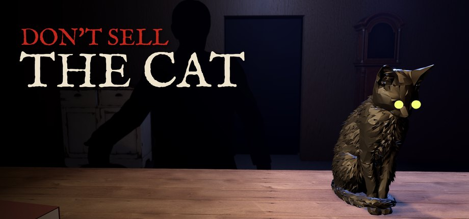

Play Windows games on your Mac
Soju installs the real Steam, Battle.net, Epic, GOG GALAXY, EA app, Rockstar, Ubisoft Connect and Xbox PC launchers on an Apple Silicon Mac and puts every installed game in one library. Your accounts and purchases stay with each store.
Download Soju 1.14.27Check your game
Using the terminal? brew install BCD1210/soju/soju

Games that run
Played by us on an M4 Pro Mac (macOS 26.5) or by Soju users. For any other game: check a game or tell us how it goes.
| Game | Store | Result | What was seen |
|---|---|---|---|
| Diablo II: Resurrected | Battle.net | Plays | Plays online. Needs macOS 26.4+. Guide |
| StarCraft: Remastered | Battle.net | Plays | A single-player match starts. Multiplayer not tried. Guide |
| Diablo IV | Battle.net | Plays | Free trial: character created and in the first area. Sound and frame rate not checked. Guide |
| Overwatch 2 | Battle.net | Plays | Signs in and plays online. Guide |
| Hogwarts Legacy | Epic | Plays | Installs and plays with D3DMetal. |
| Guilt Free (Unity, D3D11) | Steam | Plays | Plays with the DXMT setup. Guide |
| Retro Classics | Xbox PC | Plays | Plays from the Xbox PC app. |
| GOG GALAXY games | GOG | Plays | Sign in, install from the library and play. |
| Diablo II: Resurrected (Steam) | Steam | Plays | Soju user: plays the Steam edition after turning on Overwatch and Diablo II mode on the Steam card. |
| The Elder Scrolls V: Skyrim Special Edition | Steam | Plays | Soju user, M5 Pro: about 12 minutes of play with dialogue. Report |
| Call of Duty 4: Modern Warfare (demo) | Steam | Plays | The demo mission loads and plays. |
Games with kernel-level anti-cheat won't run.
Install
- Download the app
Soju-1.14.27-macos-arm64.zip. Unzip it and move Soju to Applications. Signing notes.
- Pick launchers
Open Soju, go to Platforms and choose the launchers you use. Battle.net, Epic and GOG also use Apple's Game Porting Toolkit; Soju downloads Apple's files and checks Apple's signature before installing them.
- Sign in and play
Sign in inside each launcher as usual. Installed games show up in the library.
Prefer the terminal? Run the installer, or use Homebrew. You'll need Rosetta 2, the Xcode Command Line Tools and Homebrew.
curl -fsSL https://didimlabs.com/install.sh | bash
# or
brew install BCD1210/soju/soju
soju installsoju doctor checks the setup; soju update updates it.
What's in it
- Real launchers
- Battle.net, Epic and GOG share a Wine engine built from CodeWeavers' sources with Apple's D3DMetal. EA, Rockstar and Ubisoft run on a copy of it with DXMT. Steam gets its own Wine 11 setup with DXMT for D3D11 games.
- One library
- Finds installed games across every launcher and imports the games you own on Steam and GOG.
- Store search
- Searches Steam, GOG and Microsoft Store listings with prices for your region.
- Xbox PC
- Experimental: imports owned and Game Pass games and downloads them through the Xodus backend.
Logins, purchases and game updates stay with each store. Soju doesn't bundle games or store clients, and it downloads Apple's Game Porting Toolkit files during setup.
Games from Didim Labs

Don't Sell the CatSeven nights at a 1958 pawnshop counter. Check items with a loupe, UV lamp, scale and the shop cat, and don't open the back shutter.Guides
FAQ
Can I play Windows games on an M1, M2, M3 or M4 Mac with Soju?
Often, yes. Soju runs the Windows launchers through Wine with Apple's D3DMetal or DXMT. Diablo II: Resurrected, Hogwarts Legacy and Guilt Free have been played on an M4 Pro with macOS 26.5. Games with kernel anti-cheat do not run.
Is Soju free?
Yes. Soju is free and open source under GPL-3.0-or-later. You buy games from the stores as usual. Didim Labs also sells its own Mac games in Soju's store tab.
Which macOS version do I need?
The Soju app needs macOS 14 or later on Apple Silicon. Steam games need macOS 26 or later, and Diablo II: Resurrected needs macOS 26.4 or later.
Is Soju a Whisky or CrossOver alternative?
It covers similar ground. Whisky is no longer developed and CrossOver is paid. Soju is free, focuses on the official store launchers, and builds its Wine engine from CodeWeavers' published sources.
Does Soju need my store passwords?
No. You sign in inside each official launcher. Library imports stay on your Mac and Soju has no account of its own.
A game won't start. What now?
Run soju doctor (or soju doctor d2r), check the guides, then open an issue with the game, your Mac, macOS version and what you see.
Get Soju
Free and open source. macOS 14 or later, M1 or newer. Tell us on Discord which games you try.